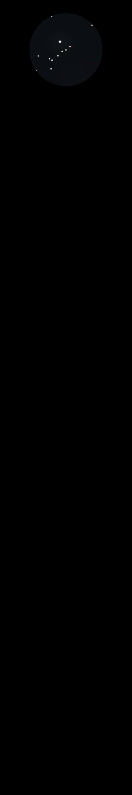

Jupiter
Fifth planet from the Sun
Largest planet in the Solar System
Gas Giant
25/11/13
Wow!, maybe the best I've ever seen for the clarity and
visibility of the bands in Jupiter's atmosphere
Really distinct and sharp edged
09/12/13
Maybe the best views I've ever seen
Fantastic and sharp in 12mm with well defined bands of colour
Io, Ganymede and Europa, but Callisto not visible behind Jupiter
at 10:55pm
11/01/14
Two really sharp brown bands, one equatorial and one to the 'NW'
20/01/14
Jupiter amazing
Io on one side and Callisto, Europa and Ganymede the other and
with a similar magnitude star (HIP 33497 at Mag 7.60) at right
angles below Jupiter's South Pole and about as far away from
Jupiter as Europa
23/01/14
Io appearing from behind Jupiter
At 19:36 Io appeared, dim and orange, and gradually brightened
to white as it came out of Jupiter's shadow
25/01/14
Ganymede just appearing from the face of Jupiter, it's shadow a
black dot just below the Southern Equatorial Belt and in the
middle longitude of Jupiter
13/02/14
Jupiter's great Red Spot? Maybe an hour after it's central
transit
24/01/15
Really bright, all four moons visible and very sharp
Lots of detail in equatorial belts but the glow (of Jupiter)
made everything a bit washed out
06/02/15
Splendid
Viewed in all eyepieces but 7mm, with and without Barlow
Barlow and 18mm gives a really sharp view
Three distinct bands visible with other features hinted at in
moments of good seeing
Good colours to the bands, greys and browns
The moons are all to one side. Io nearest, then Europa and
Ganymede really close together at 8:30 'ish and Callisto
farthest out
Also a few tiny stars in the FOV
18/02/15
Splendid in 12mm with three obvious bands and a fainter one
towards each Pole
At 20:12 Io disappears or occult's Jupiter (passes behind)
There is a tiny dot about 3/4s of the way across from where the
moon (Io) disappears and right on the centre line a lump in the
band
20/03/15
Only Callisto and Io to the West with Io very close to Jupiter
at 8pm and Europa on the other side
Ganymede behind Jupiter and Io due to disappear at 9:44pm
Great Red Spot at Jupiter's central meridian (transit) at
8:03pm, visible using 12mm and Barlow to give a magnification of
180x in moments of good seeing, on upper of the two bands (Io to
the left) which is rotating towards Io
Distinct dark dip in the band, especially on the leading edge
with the GRS a pale yellow
05/04/15
Io very close to Jupiter and getting closer, just disappears
behind Jupiter at 8:50pm exactly mid-way between the two most
pronounced bands
15/01/16
Nice to see again in the evening sky, albeit very low through
the haze
Io close on one side and Europa and Callisto on the other
Two dark equatorial bands nicely visible
10/03/16
What a joy it must have been for Galileo when he first observed
Jupiter, rather like me tonight!
In 12mm a perfect circle, with the North and South Equatorial
Bands clearly visible and the moons perfect, with Io, Europa and
Callisto on one side, all perfectly spaced, and Ganymede on the
other, all so obviously interrelated
13/03/16
Just past opposition which was on 8th March so perfectly placed
for observing
Really sharp and well defined bands with the North Equatorial
Belt the darkest, the South Equatorial Belt greyer but slightly
wider and further from the equator, with the Great Red Spot a
darker and quite prominent feature (the most distinct I have
ever sen it)
Also, thin but quite defined, two belts in the temperate regions
north and south
No colours visible, just shades of grey but the GRS seemed to
sit on top of it's belt, being much denser a shade and as dark
as the North Equatorial Belt
Europa and Ganymede were interesting, nearly touching and moving
together away from Jupiter, Europa slightly above (to the
south of) Ganymede and slightly closer to Jupiter as shown in
the sketch I made at the eyepiece here
14/03/16
Again really big and bright, just past opposition, no sing of
the GRS which is not due to transit until 03:00 tomorrow morning
Moons all on one side with Europa followed by Io closest, the
two close to each other
25/03/16
A month past opposition but still bright and bold
At 8:30pm Jupiter's moons in really unusual positions, all one
side with Ganymede furthest out but Callisto, Io and Europa
close to Jupiter but not in a line, Callisto above and Io and
Europa below and in a line, with Europa closest to Jupiter
The shadow of Europa was clearly visible just below the North
Equatorial Belt, creeping towards Jupiter's edge, see the sketch
I made at the eyepiece here
In fact six belts were visible in moments of good seeing, using
18mm and Barlow to give 120x magnification
The transit of the GRS at 11:09pm clearly visible, with the GRS
forming a dark notch in the South Temperate Belt
28/03/16
The GRS was due to transit at 9:38pm but I don't think it had
quite reached the central meridian by this time
The South Equatorial Belt quite faint with the GRS sticking out
of it to the south (the top in my FOV) and quite pronounced
A really sharp view using 18mm and Barlow to give a
magnification of 120x
However, just as I was observing it the heavens opened and down
came the rain!
All four of Jupiter's bright moons to the east, Io and Europa
close together, then Ganymede and Callisto furthest out
A distinct difference in latitude between Io and Europa
31/03/16
At 20:19 Io just disappearing behind Jupiter, at the same
latitude as the GRS, although the GRS not visible, or is it?,
about an hour before transit
03/05/16
Interesting at 21:50 with Europa just clearing Jupiter's body
and it's shadow still on the meridian and within the North
Equatorial Belt
Io further out on the same side as Europa, on the other side
first Ganymede and then Callisto
As shown in this Stellarium
screenshot
18/04/17
Nice and bright with the moons in an interesting configuration
Europa very close to Jupiter at 21:43 and moving closer to go
behind the planet
Io and Ganymede both the same distance away and above one
another, with Ganymede on top
Callisto a long way out, five times the distance that Io and
Ganymede are
The Mag 7.65 star Px Vir, HIP 63742 is actually closer than
Callisto and appears about a magnitude fainter and not so yellow
as the moons
The equatorial and temperate bands are clearly visible
Europa has disappeared at 22:00
This sketch was made at the
eyepiece
{kind=link}
{kind=link}
{kind=link}
{kind=link}